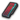
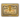
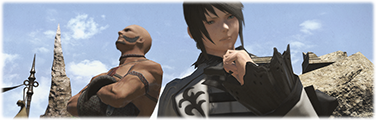
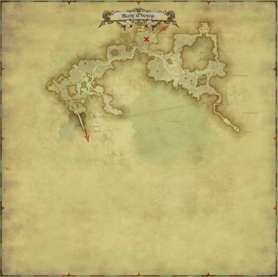
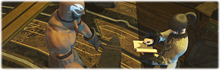
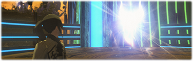
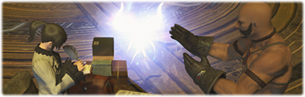
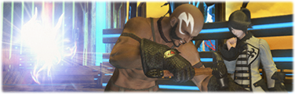
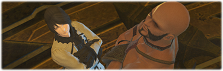
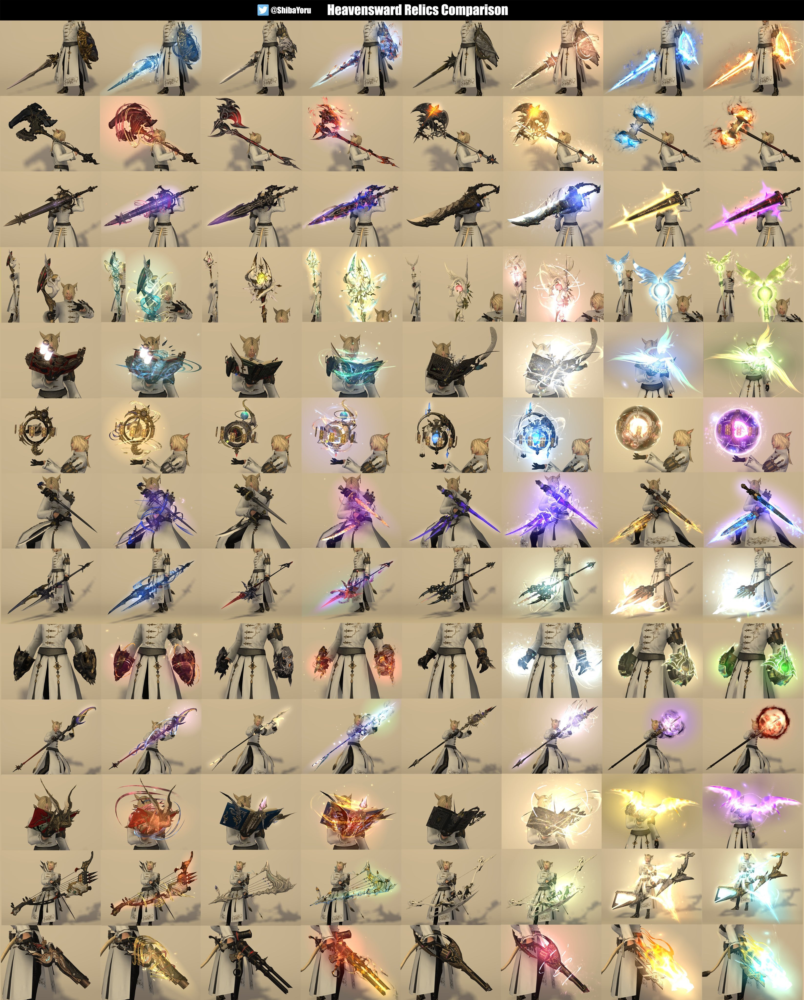

tags:
- FFXIV
- HW
- Guide
- Relic
- Anima
icon: LiSword
title: Relic - Anima Weapons (HW)Relic - Anima Weapons (HW)
A young researcher hailing from the Near East has come to Eorzea in search of aid. His field of study? Anima, an essence he considers to be a reflection of the soul. Through a chance encounter with the master craftsman Gerolt, he and the legendary blacksmith have joined forces to create a weapon the likes of which the realm has never seen.
- Patch 3.1 Official Site
Though it is only a matter of time before the anima fully develops, Ardashir believes he can hasten the process. To that end, he voyages to Idyllshire in search of an acquaintance, one Ulan. A fellow researcher and enthusiast of all creatures arcane, she has devoted her life to their study and methods by which they can be enhanced. Could her work be the key to unlocking the anima's potential?
- Patch 3.3 Official Site
After many tests and trials, the anima would appear to be at the pinnacle of perfection. To that end, Ardashir is making preparations to return to the Near East that he might present his findings. Gerolt, on the other hand, believes there is yet work to be done. Could our resident drunkard and realm-renown blacksmith hold the key to the anima's advancement?
- Patch 3.4 Official Site
As repair work on the Allagan droid progresses, it becomes clear that it won't be long until the anima weapon is fortified at last. Just what form will the anima take once all is said and done? Well, that's the million-gil question.
- Patch 3.5 Official Site
As usual, there's a good website to help track where you stand on each of the steps of this relic grind: https://ffxivrelictracker.com/
This relic will require a lot (like really a looot!) of Allagan Tomestone of Poetics as well as some Grand Company Seals
It's also heavily recommended to have at least Second Lieutenant rank on your Grand Company of choice to purchase some of the materials required (they can be obtained in the marketboard as well!)
While this relic has much less steps than the ARR one, the costs are condensed, as such, these quests will take well over 8000 Allagan Tomestone of Poetics to complete, it's recommended that you avoid the 2000 cap on tomestones by spending on whatever materials you can buy along the way.
The tables below will highlight some of the items that can be purchased and stocked up in preparation for the steps that will come.
Some items will not be available to buy until you reach the step and unlock them.
Note that I might've missed something here, but this should at least give you a head start.
Some materials can be obtained via other means than what the tables specify, I've just organised them by tokens as that will cost less Gil in the long run.
If you want to see other options of obtaining each, click on the material names.
| Material | Quantity | Cost (each) | Where |
|---|---|---|---|
| Unidentifiable Bone | 10 | 150 | Hismena |
| Unidentifiable Shell | 10 | 150 | Hismena |
| Unidentifiable Ore | 10 | 150 | Hismena |
| Unidentifiable Seeds | 10 | 150 | Hismena |
| Aether Oil | 5 | 350 | Hismena |
| Umbrite | Variable (RNG based) |
75 | Hismena |
| Singing Cluster | 50 | 40 | Hismena |
| Material | Quantity | Cost (each) | Where | Special Requirements |
|---|---|---|---|---|
| Adamantite Francesca | 4 |  5000 | Any GC Quartermaster |
Second Lieutenant rank |
| Titanium Alloy Mirror | 4 | 5000 | Any GC Quartermaster |
Second Lieutenant rank |
| Dispelling Arrow | 4 | 5000 | Any GC Quartermaster |
Second Lieutenant rank |
| Kingcake | 4 | 5000 | Any GC Quartermaster |
Second Lieutenant rank |

To start this relic, you will first need to complete a one time only quest: An Unexpected Proposal
This quest can be found in Idyllshire by speaking with Rowena*.
The quest will then send you to Azys Lla to speak with Ardashir for the next quest.
After you reach Azys Lla, you will get access to the repeatable quest Soul without Lifewhich can be done every time you want to start a new relic (if doing multiple of them).
This quest requires that you obtain an Astral Nodule and an Umbral Nodule from Syndony which can be found in Mor Dhona.
Syndony can be found on Mor Dhona on the balcony outside of the House of Splendors.

This quest is unique in that it offers two options to obtain these items.
Farm FATEs in each of the Heavensward zones to obtain crystals.
Only one crystal per zone is needed and it shouldn't be as bad as Atma from Relic - Zodiac Weapons (ARR).
See below where to go for each one.
If you still have your Zeta Weapon you may turn this in instead to receive the two items required right away.
If you don't care about keeping the original weapon and just want the glamour, you can always purchase a Replica from Drake at any point after completing the relics.
For this step, we're back on the dungeon grind!
This step starts by talking with Ardashir who will give you the quest Toughening Up that will send you to complete 10 dungeons.
These dungeons can be completed unsynced by using the Unrestricted Party option so this will be really quick!
From here on out the big tomestonecalipse starts and you will have a much better time if you bought some of the materials before-hand.
Once again, Ardashir will give you the next quest in the series.
This one is Coming into Its Own
To complete this quest, you will have to turn-in four items that need to be traded for using the materials below, these are: Enchanted Rubber, Fast-drying Carboncoat, Divine Water, and Fast-acting Allagan Catalyst.
If you opt for buying the token items using Allagan Tomestones of Poetics be ready to be spend 6.000 total tomes getting all the required items.
| Item | Quantity |
|---|---|
| Unidentifiable Bone | 10 |
| Unidentifiable Shell | 10 |
| Unidentifiable Ore | 10 |
| Unidentifiable Seeds | 10 |
| Adamantite Francesca | 4 |
| Titanium Alloy Mirror | 4 |
| Dispelling Arrow | 4 |
| Kingcake | 4 |
The Unidentified items must be bought with tokens (there are several options which you can combine to save on Tomestones) as they are untradeable, however, any of the other items you will be able to purchase not only using Grand Company Seals but you may also buy them straight from the market-board or even craft them yourself!
After you have all the needed items, turn them in to Cristiana in Mor Dhona to receive your upgraded weapon!

Another currency dump quest.
This time it's 1750 tomestones. Gah!
This step will start with quest Finding Your Voice given by Ardashir on Azyz Lla and you will have to turn in 5 Aether Oil.
You can find the Aether Oil at Hismena as referred earlier on this guide.
This quest will grant access to the Restoration Node which also gives you access to purchasing all the replicas of the Anima Weapons!

This step is a bit more complex.
On this step you will add stat points to the Hyperconductive Anima Weapon.
It requires a total of 240 points added by spending Treated Crystal Sand which can be obtained by combining Crystal Sand and Umbrite.
The quest to start this step is called A Dream Fulfilled and starts, as usual, on Azys Lla given by Ardashir.
This will take you to Ulan in Idyllshire who will ask you to collect the items above.
As this step depends heavily on RNG, the recommended quantity to get is between 50-60 Umbrite (you may get 50 and then add as needed).
After 120 points, there's a chance to gain bonus points when converting the Treated Crystal Sand, helping with reducing the spending.
To obtain the Crystal Sand however, you will have to trade with Ulan for certain items.
Each trade grands 2 Crystal Sand.
While the list of items you can trade is extensive, most of them are horrible trades and some of the items are no longer available at this point.
Another option that might be viable is buying primal parts, check the market board for prices.
Make sure you're pricing them together as you need 3 non-interchangeable items for a trade-in. Don't buy 2 of them for cheap only to find out that the third item is prohibitively expensive.
Below is the full list of all possible trades:
| Exchange | Materials | Where to obtain |
|---|---|---|
| Rowena's Tokens (Blue Crafters' Scrip) | 5 Rowena's Token (Blue Crafters' Scrip) | 25 White Crafters' Scrip (125 total) |
| Rowena's Tokens (Blue Gatherers' Scrip) | 5 Rowena's Token (Blue Gatherers' Scrip) | 25 White Gatherers' Scrip (125 total) |
| Crafting Materials | 1 Garlond Steel 1 Celestine 1 High Allagan Chimera Leather |
Crafted |
| Amber-encased Vilekin | 1 Amber-encased Vilekin | Heavensward Levequests |
| Astral-aspected Materia | 1 Fire Materia IV 1 Wind Materia IV 1 Lightning Materia IV |
- |
| Umbral-aspected Materia | 1 Ice Materia IV 1 Earth Materia IV 1 Water Materia IV |
- |
| Demimateria | 3 Battlecraft Demimateria I 2 Battlecraft Demimateria II 3 Fieldcraft Demimateria I 2 Fieldcraft Demimateria II |
Desynthesis |
| Moonstones | 5 Moonstones | 4000 Grand Company Seals each Treasure maps Ixali Daily Quest |
| Primal Pieces I | 1 Inferno Horn 1 Crag Heart 1 Diamond Tear |
Ifrit (Extreme) Titan (Extreme) Shiva (Extreme) |
| Primal Pieces II | 1 Vortex Feather 1 Barb of the Whorl 1 Large Levin Orb |
Garuda (Extreme) Leviathan (Extreme) Ramuh (Extreme) |
| Other Items I | 5 Superior Enchanted Ink 5 Thavnarian Mist |
25 Tomestone of Poetics (125 total) 20 Tomestone of Poetics (100 total) |
| No longer farmable | ||
| Esoterica | 1 Unidentifiable Bone 1 Unidentifiable Shell 1 Unidentifiable Ore 1 Unidentifiable Seeds |
Multiple methods, check item links. |

For this step, it's... More Tomestones! Okay, not quite, you will also have supporting quests~~
Accept the quest Future Proof given by Ardashir.
The goal of this quest is to collect and turn in 50 Singing Clusters.
How do you go about doing that then?
Well, these are the options to obtain the clusters:
Purchase the Singing Clusters from Hismena for 40 Allagan Tomestones of Poetics
Repeatable quest Cut from a Different Cloth will have you run Duty Roulette: Level 50/60/70/80 and will give you 1x Singing Clusters.
Repeatable weekly quest Seeking Inspiration will send you to Duty Roulette: Leveling for three runs, after which it will reward you with 18x Singing Clusters.

For this step, we're back on the dungeon grind.
This step will open up two repeatable quests Born Again Anima and Some Assembly Required.
For the quest Born Again Anima you have to complete three specific dungeons:
Deliver the quest rewards to Gerolt.
Accept the quest Some Assembly Required.
You will need to collect 15 Pneumite to turn in for a Newborn Soulstone.
This can be obtained by purchasing it with 100 Tomestones of Poetics at Hismena or at your Grand Company Quartermaster for 4.000 Company Seals each (60.000 total).
Afterwards, you'll have to grind Aetheric Density.
You can earn this via many options based on Heavensward content, including FATEs, dungeons, trials and raids.
Farming Alexander Savage Raids unsynced is usually the fastest way to complete the Aetheric grind.
A9S is a good option, but any of them from 9 to 12 will work.
These will give you 96 Aetheric Density for each clear which means you will only have to do them around 20 times to max out your relic.

The final step for this relic. (yay!)
You start this step by doing two one-time quests:
After you complete these two quests, you will get the repeatable quest Best Friends Forever.
This quest ask that you complete 12 trials, these will be presented as 4 groupings that must be completed in order.
After the trials are all complete, all that's missing is purchasing 1 Archaic Enchanted Ink from Hismena for 500 Tomestones!
After you turn this in, it's done!
Congratulations!

Date: 01/06/2024
Collected by W'eylyn Mavourneen
Collected from (non exhaustively):